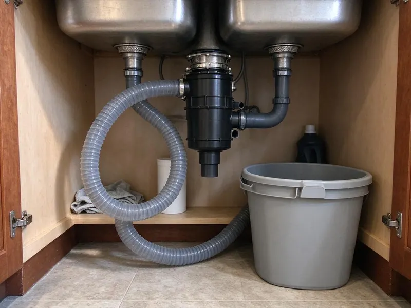

Kitchen Plumbing in Georgetown, TX
For homeowners in Georgetown, TX, keeping kitchen plumbing in top shape is essential. We handle everything from leaky faucets to complex garbage disposal problems.
- Fast Service
- Licensed Plumbers
- Upfront Pricing
- Guaranteed Work
Expert Kitchen Plumbing Services in Georgetown, TX.
Don't let a clogged drain or broken disposal disrupt your home, contact us today for reliable service.
Reliable Kitchen Plumbing Services in Georgetown, TX
DFJ Plumbing is dedicated to providing comprehensive kitchen plumbing services across Georgetown, TX. We understand the vital role your kitchen plays in daily life and the inconvenience a plumbing problem can cause.
Our expertise includes:
- Garbage disposal repair and installation
- Kitchen sink and faucet replacement
- Drain cleaning and grease trap service

Additional Kitchen Plumbing Services in Georgetown, TX
Our kitchen plumbing services in Georgetown, TX cover sinks, disposals, dishwashers, and grease traps so your kitchen keeps running without backups or leaks.


Customers
Why Choose DFJ Plumbing for Kitchen Plumbing in Georgetown, TX?
Our commitment to quality workmanship and customer satisfaction sets us apart. We ensure every job is done right, the first time.
- Local Expertise, We understand the specific plumbing challenges faced by homeowners in Georgetown, from hard water issues to slab foundation concerns.
- Clear Pricing, You'll always receive transparent, upfront pricing before any work begins, so there are no surprises on your bill.
- Qualified Team, Our plumbers are licensed, insured, and continuously trained on the latest plumbing technologies and safety protocols.
Citywide Coverage
We ensure that residents across Georgetown have access to expert kitchen plumbing services. Our local presence means faster response times and plumbers familiar with the area's specific building types.
Experienced Team
The technicians at DFJ Plumbing are not just skilled, they are specialists in kitchen plumbing. They stay updated on the latest fixture models and repair techniques to provide the best service in Georgetown.
Safety-First Approach
Safety and code compliance are paramount in all our kitchen plumbing work. We adhere strictly to local Georgetown, TX plumbing codes and industry best practices to ensure your system is safe and efficient.
Trusted Certified Georgetown Plumbing Services Professionals
At DFJ Plumbing, we take pride in providing licensed, certified plumbing services throughout Georgetown, TX. Backed by recognized industry credentials, our experienced plumbers combine technical skill with genuine customer care. Whether it is repair, installation, or maintenance, we follow strict safety and quality standards to deliver lasting results you can trust.
Call Us Now PHCC Plumbing Contractor Recognition
PHCC Plumbing Contractor Recognition Better Business Bureau (BBB) Accreditation
Better Business Bureau (BBB) Accreditation Angi Certified Pro
Angi Certified Pro ISO 9001 Quality Management Certification
ISO 9001 Quality Management CertificationDependable Kitchen Plumbing Services in Georgetown, TX
Kitchen Sink Installation in Georgetown
Whether you're remodeling or replacing an old, leaky sink, DFJ Plumbing provides professional kitchen sink installation. We handle all types, from stainless steel undermounts to farmhouse apron sinks, ensuring proper sealing, secure mounting, and correct drain connections. Our team will also install new faucets, garbage disposals, and water filtration systems as part of your sink upgrade in Georgetown. We ensure all connections are leak-free and meet local plumbing codes.

Garbage Disposal Repair & Replacement in Georgetown, TX
A malfunctioning garbage disposal can disrupt your entire kitchen. DFJ Plumbing offers expert garbage disposal repair for common issues like clogs, jams, leaks, or motor failures. If your unit is beyond repair or you're looking for an upgrade, we provide efficient garbage disposal replacement and installation services across Georgetown, TX. We work with top brands like InSinkErator and Waste King, ensuring you get a durable and powerful unit that fits your needs and budget.
Grease Trap Installation & Cleaning in Georgetown
For commercial kitchens in Georgetown, proper grease trap management is crucial for preventing drain clogs and complying with health codes. DFJ Plumbing specializes in grease trap installation, ensuring your system is correctly sized and installed to handle your business's demands. We also offer routine grease trap cleaning and maintenance services to keep your system running efficiently and prevent costly backups and fines. Regular service is key for longevity and compliance.
Emergency Kitchen Plumbing in Georgetown, TX
Kitchen plumbing emergencies, like burst pipes under the sink or a completely blocked main drain, require immediate attention. DFJ Plumbing provides fast, reliable emergency kitchen plumbing services throughout Georgetown, TX. Our plumbers are equipped to diagnose and repair urgent issues quickly, minimizing damage and restoring your kitchen's functionality. Don't hesitate to call us anytime you face a critical kitchen plumbing problem.
Faucet Repair and Replacement in Georgetown
A dripping kitchen faucet can waste a surprising amount of water and money. DFJ Plumbing offers comprehensive faucet repair services, addressing leaks, low water pressure, and faulty handles. If a repair isn't cost-effective, we can help you choose and install a new, water-efficient faucet that complements your kitchen's style. We handle all major brands and types, including pull-down, single-handle, and touchless faucets for homes in Georgetown.
Kitchen Drain Clog Removal in Georgetown, TX
Kitchen drains are prone to clogs from food particles, grease, and soap scum. Our plumbers use advanced tools like augers and hydro-jetting to effectively clear stubborn blockages from kitchen sinks and main lines in Georgetown, TX. We don't just clear the clog, we identify the cause to help prevent future issues, ensuring your kitchen drains flow freely and efficiently. Avoid harsh chemical drain cleaners that can damage your pipes.
Insinkerator Installation & Service in Georgetown
As a leading brand, InSinkErator garbage disposals are known for their reliability and performance. DFJ Plumbing provides expert InSinkErator installation, ensuring your new unit is correctly wired and plumbed for optimal function. We also offer repair and maintenance services for existing InSinkErator models in Georgetown, addressing common issues like motor hums, grinding noises, and leaks. Trust us to keep your InSinkErator running smoothly.

Water Hardness Solutions for Kitchens in Georgetown, TX
Texas is known for its hard water, which can lead to mineral buildup in kitchen pipes, faucets, and appliances. DFJ Plumbing can assess your home's water hardness in Georgetown, TX and recommend solutions like water softeners or filtration systems. These systems protect your kitchen plumbing, extend appliance life, and improve the taste of your drinking water, preventing scale buildup that causes clogs and reduces efficiency.
Kitchen Plumbing Near Me in Georgetown, TX
If you're searching for 'kitchen plumbing near me' in Georgetown, look no further than DFJ Plumbing. Our local team is strategically located to provide prompt and efficient service throughout the metropolitan area. We understand the urgency of plumbing issues and strive to reach your home quickly.
No matter where you are in Georgetown, TX, DFJ Plumbing is your trusted local plumbing partner. We pride ourselves on being accessible and responsive to the needs of our community, ensuring expert kitchen plumbing help is always just a phone call away.
DFJ Plumbing at a Glance
- Licensed and insured plumbers serving Georgetown, TX
- 24/7 emergency service with same-day scheduling
- Clear written estimates, no hidden fees
- 4.9-star rated by 812+ Texas customers
Georgetown Map
Georgetown Information
- Population
- 96,312
- Area codes
- 512/737/979
- Service area
- Georgetown and communities within 40 miles
- Nearby
- Round Rock, Leander, Cedar Park, Pflugerville
Proper kitchen plumbing is especially important in Georgetown, TX due to factors like hard water that can cause mineral buildup and the varying soil conditions affecting slab foundations and underground pipes.
Expert Services
Trust our professionals for reliable DFJ Plumbing solutions in Georgetown, TX.
Our Specialized Plumbing Services in Georgetown, TX
At DFJ Plumbing, we provide a complete range of plumbing services across Georgetown, TX. From leak detection to full system installations, our team ensures fast, precise, and affordable service for both residential and commercial properties. Explore our core services below:


How Our Kitchen Plumbing Process Works in Georgetown, TX
Our process ensures clear communication, efficient work, and lasting results for every kitchen plumbing job in Georgetown, TX.
Request a Quote
Contact us at (737) 405-5978 or fill out our online form to schedule your kitchen plumbing service. We'll gather details about your issue and set up a convenient appointment time.
On-Site Assessment
A licensed plumber will arrive at your Georgetown home, diagnose the kitchen plumbing problem, and explain the necessary repairs or installation options. You'll receive a clear, upfront estimate.
Expert Service
Upon your approval, our technician will perform the work efficiently and meticulously, using quality parts and adhering to all local plumbing codes. We ensure your kitchen plumbing is restored or upgraded properly.
Frequently Asked Questions About Kitchen Plumbing in Georgetown
The cost of kitchen plumbing service in Georgetown varies widely depending on the specific job. Simple repairs like clearing a minor clog might range from $150-$350, while a new garbage disposal installation could be $300-$600. Major projects like full sink replacements or main drain hydro-jetting can cost more. We always provide a detailed, upfront quote before starting any work.
For minor repairs like replacing a faucet or clearing a simple clog, a permit is generally not required. However, significant alterations to your plumbing system, such as relocating drain lines, installing a new water heater, or making changes to the main waste lines, often require a permit from the city of Georgetown. We can advise you on permit requirements for your specific project.
While it's possible for experienced DIYers, professional installation is recommended. It involves electrical wiring, secure plumbing connections, and ensuring proper drain alignment. Incorrect installation can lead to leaks, electrical hazards, or damage to your sink and pipes. Our plumbers in Georgetown ensure safe and compliant installation.
Yes, DFJ Plumbing stands behind our work. We offer a warranty on all parts and labor for our kitchen plumbing services in Georgetown. The specific duration of the warranty may vary depending on the service performed and the parts installed. We'll provide full details with your service agreement.
We service and install all major brands of kitchen plumbing fixtures, including Moen, Delta, Kohler, American Standard, Pfister, and InSinkErator for garbage disposals. Our technicians are familiar with the specific parts and repair techniques for a wide range of manufacturers common in Georgetown, TX homes.
A standard kitchen sink installation or replacement typically takes 2 to 4 hours, assuming existing plumbing is in good condition. If modifications to the countertop, plumbing lines, or cabinet are needed, it could take longer. We'll give you an accurate time estimate during our initial assessment in Georgetown.
For commercial kitchens, the frequency of grease trap cleaning depends on usage and size, but typically every 1 to 3 months is recommended. For residential applications, routine cleaning isn't usually necessary unless you have a small trap and cook with a lot of grease. Regular professional cleaning prevents severe clogs and ensures compliance with local waste regulations in Georgetown.
To prevent kitchen drain clogs, avoid pouring grease or oil down the drain, use a drain strainer to catch food particles, and run cold water while operating your garbage disposal. Occasionally flush your drain with hot water and a bit of dish soap. These habits can significantly reduce the risk of blockages in your Georgetown home.
What People Are Saying About Our Plumbing Experts?

Laura S.
I scheduled a water heater replacement, and the team made the process smooth and affordable. The new unit works perfectly, and they cleaned up after completing the job.
Water Heater Replacement · Cedar Park, TXSofia M.
Two new toilets installed in one visit, no mess left behind, and the tech even adjusted a faucet he noticed was dripping. Fair pricing and really friendly.
Toilet Installation · Austin, TX
Patricia H.
We had a slab leak that two other companies could not find. DFJ Plumbing located it in under an hour, explained our options, and the price matched the quote to the dollar.
Slab Leak Repair · Georgetown, TX
Robert G.
The trenchless sewer replacement saved our front yard. They walked us through the camera inspection footage first so we knew exactly what we were paying for.
Sewer Line Replacement · Pflugerville, TX
Daniel K.
A pipe burst at 11 pm and they actually answered. The plumber showed up within the hour, shut everything down, and had us back to normal the next morning. Could not ask for more.
Emergency Plumbing · Killeen, TX
Emily R.
I called DFJ Plumbing for plumbing repair, and the technician was fast, polite, and thorough. They explained the problem clearly and fixed it the same day. I will definitely hire them again. Highly recommended!
Plumbing Repair · Cedar Park, TX